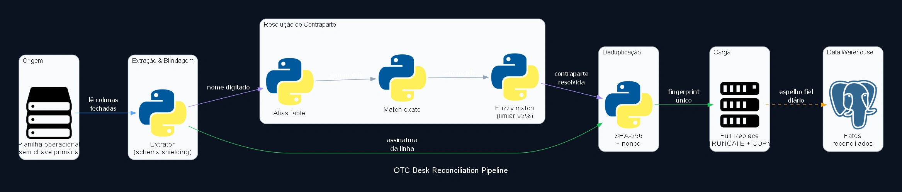

OTC Desk Reconciliation Pipeline
ETL diário de reconciliação da mesa OTC, que ingere planilha operacional mantida por humanos (sem chave primária estável, com linhas reordenadas, apagadas e recriadas na origem) para um data warehouse relacional, resolvendo nome de contraparte digitado de forma inconsistente via fuzzy matching com limiar de 92% de similaridade. Em vez de upsert incremental, a carga usa Full Replace (truncate + reload integral) a cada execução, garantindo que o banco seja sempre espelho fiel da planilha. Deduplicação roda por hash SHA-256 sobre a assinatura da transação mais um contador de ocorrência (nonce), preservando de propósito splits legítimos idênticos em vez de colapsá-los. Uma camada de blindagem de schema extrai estritamente as colunas financeiras esperadas e ignora qualquer coluna nova que a área de negócio adicione sem aviso, para que edição de usuário não quebre a ingestão.

Estudo de caso
Problema
A fonte de dado era uma planilha operacional de alta complexidade, mantida manualmente por uma equipe de negócio, sem qualquer chave primária estável: linhas eram inseridas, apagadas e reordenadas o tempo todo, sem rastreabilidade. A área de negócio adicionava colunas de cálculo novas sem aviso prévio, quebrando scripts de automação tradicionais. E o nome da contraparte de cada operação era digitado à mão, frequentemente de forma inconsistente; a mesma contraparte aparecendo grafada de jeitos diferentes na mesma planilha.
Solução
Sem chave primária, upsert incremental viraria uma fonte de registros fantasmas assim que uma linha fosse reordenada ou apagada na origem. A carga usa Full Replace em vez disso: a cada execução, a tabela de fatos é truncada por inteiro e recarregada via protocolo COPY do PostgreSQL, garantindo que o banco seja sempre um espelho exato do estado atual da planilha, sem herdar histórico incoerente. Como não existe PK para deduplicar contra, cada transação recebe um fingerprint SHA-256 calculado sobre a assinatura lógica da linha (tipo de operação, contraparte, ativo, quantidade, data, hash de origem) combinada com um contador de ocorrência, o nonce. Isso preserva de propósito splits legítimos idênticos em vez de colapsá-los como se fossem duplicata acidental. A extração aplica uma blindagem de schema: em vez de ler a planilha inteira, ela extrai estritamente uma lista fechada de colunas financeiras esperadas e ignora qualquer coluna desconhecida, temporária ou de cálculo solto; uma edição de usuário de negócio na planilha não derruba a ingestão do dia seguinte. Por fim, o nome de contraparte passa por resolução em cascata: primeiro contra uma tabela de alias explícita, depois por correspondência exata contra a dimensão já conhecida, e só depois por fuzzy matching (limiar de 92% de similaridade) contra a lista de contrapartes cadastradas; abaixo do limiar, o nome é sinalizado como cliente novo em vez de forçado a um match errado.
Impacto
A planilha da mesa de operações deixou de ser um ponto único de fragilidade para servir como fonte confiável de um data warehouse relacional, sem etapa manual de triagem de contraparte e sem quebrar a cada coluna nova que a área de negócio adicionasse. A reconciliação diária, execução após execução, garante que o banco nunca acumule registro fantasma nem perca operação legítima duplicada por engano.
Tem uma fonte de dado sem chave primária te dando dor de cabeça? Vamos desenhar a reconciliação que resolve isso de verdade.
Falar sobre seu caso